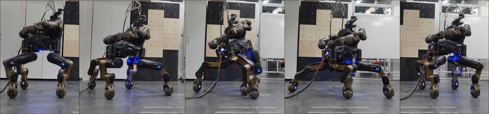

WORKSHOP
Advancements in Trajectory Optimization and Model Predictive Control for Legged Systems
2nd Edition
ABOUT
Robotic technology has proven to be an excellent solution for aiding humans in an ever-increasing number of scenarios: from domestic and urban routines to industrial tasks, robots reduce the workload burden on humans and their exposure to hazards. Despite the capabilities demonstrated in recent years, many obstacles remain to be overcome. New challenges arise from the increasing capabilities of advanced robotic platforms. The more complex and unstructured the environment, the more robots should be versatile and reliable to overcome obstacles, plan optimal motions, and reliably accomplish the designed tasks.
This workshop continues to explore state-of-the-art advancements in control strategies that are behind the abilities of such robots, namely, planning and control of dynamic, whole-body motions. Pursuing the thread initiated with the first edition of this workshop, we will focus on trajectory optimization and optimal control: successful approaches that exploit the robotic systems' dynamics, particularly under-actuated ones. This second edition will also address links and synergies with machine learning approaches, e.g. reinforcement learning or deep learning, which are undeniably increasing their relevance and popularity for planning and control applications. Both strategies boil down to a minimization (or maximization) of a desired metric, resulting in a sequence of the most effective actions to take. However, they are fundamentally different approaches that exhibit inherent advantages and drawbacks. How do robotic systems benefit from these methods? Which are the properties shared by the two? How to combine these strategies? These questions will be addressed, soliciting a discussion to compare ideas and solutions from the invited speakers.
PROGRAM
| Time | Section | Speaker |
|---|---|---|
| 8:45 - 9:00 | Welcome | Organizers |
| 9:00 - 9:30 | Talk 1 | |
| 9:30 - 10:00 | Talk 2 | |
| 10:00 - 10:30 | Talk 3 | |
| 10:30 - 11:00 | Coffee Break | |
| 11:00 - 11:30 | Talk 4 | |
| 11:30 - 12:00 | Talk 5 | |
| 12:00 - 13:00 | Poster Session | Accepted Authors |
| 13:00 - 14:00 | Lunch Break | |
| 14:00 - 14:30 | Talk 6 | |
| 14:30 - 15:00 | Talk 7 | |
| 15:00 - 15:30 | Talk 8 | |
| 15:30 - 16:00 | Coffee Break | |
| 16:00 - 16:30 | Talk 9 | |
| 16:30 - 17:15 | Final Discussion | Oranizers + Speakers |
| 17:15 - 17:30 | Best Poster Award | |
| 19:00 - 22:00 | Social Dinner | Organizers + Speakers + Finalists |
SPEAKERS
Patrick Wensing
University of Notre Dame
Title: Accelerating MPC for dynamic locomotion: Exploiting structure, and letting learning guide the way
Jean Pierre Sleiman
ETH
Title: Whole-Body Motion Planning and Control for Multi-Contact Locomanipulation
Serena Ivaldi
Inria
Title: Teleoperating humanoid robots: optimised controllers, contacts and human-like motions
Carlos Mastalli
Heriot-Watt University
Title: Accelerating Algorithms for Numerical Optimization in Full-Dynamics MPC
Andrea Del Prete
Università di Trento
Title: Integrating learning and trajectory optimization to achieve safe and efficient robot control
Nicolas Mansard
LAAS-CNRS
Title: Whole-body MPC on real robots, by combining advanced solver and machine learning
ORGANIZERS
IIT

IIT
Inria
University of Texas
at Austin
Heriot-Watt University